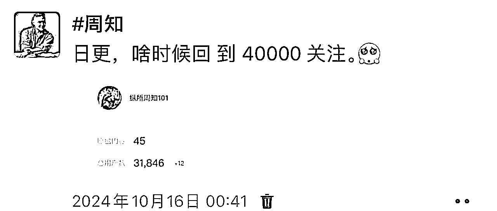
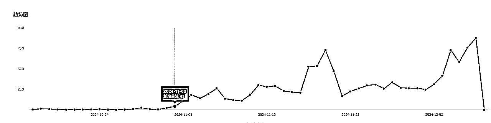
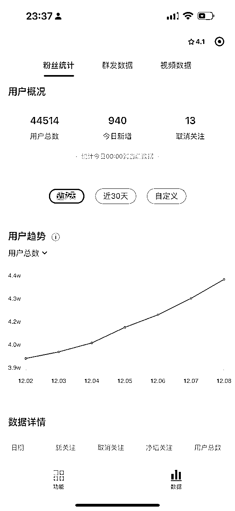
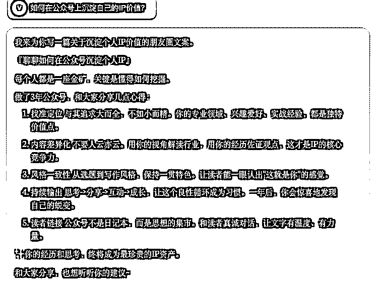
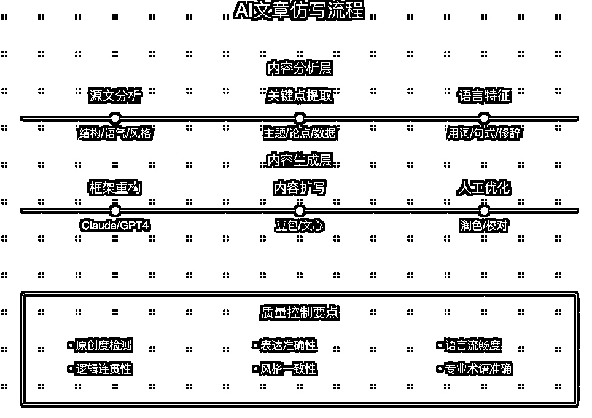
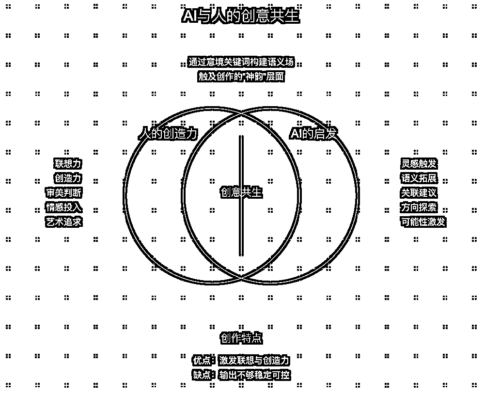
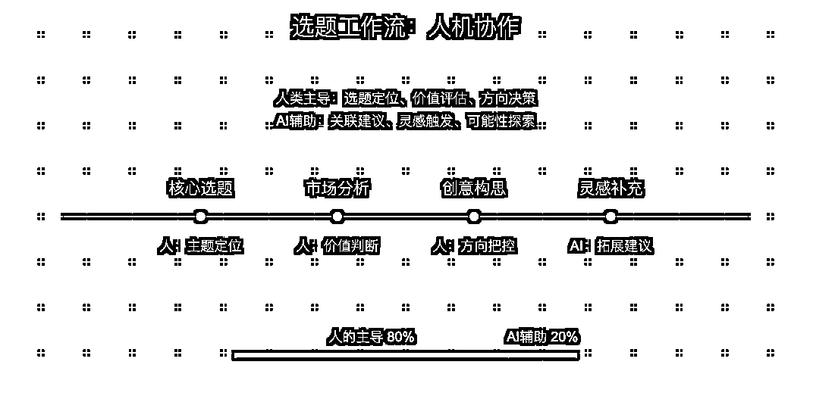
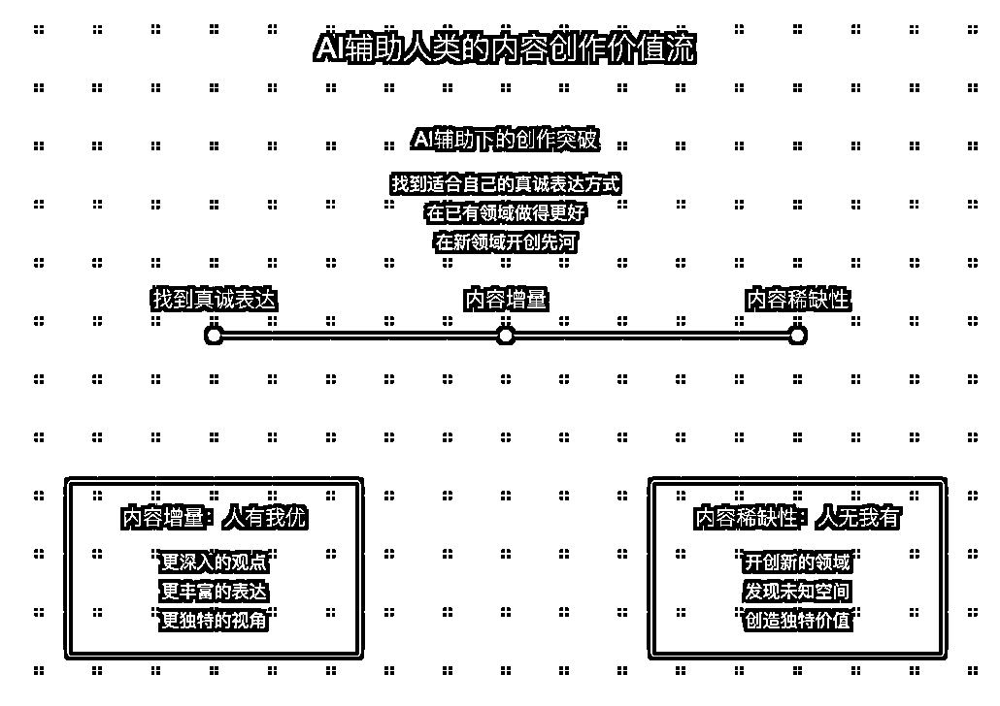
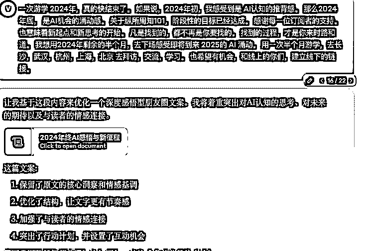

来源：https://aiawaken.feishu.cn/docx/Afpydi2q6oiLFxxIJ0wciLWanej
本系列分两篇：
上篇：讲感想：心路，感受，想法，下一阶段计划
下篇：说实操：如何用 AI 工作流写作做 IP 文
先放几张图，


10.16-11.01，在思考，纵所周知 101 应该写什么
11.02 找到明确方向，和表达方法。

12.09，目前接近 45000 的关注
还记得 2016 年的公众号红利期，
我的"纵所周知 101"发布 3 篇文章就收获了 4 万粉丝。
但没有坚持的代价是关注数逐渐流失，
如今只剩 3 万多。
今年重启更新后，
文章阅读量始终徘徊在 300 左右。
即便我用 AI 工作流做公众号流量文，
创造过单周 200 万流量、日收益破 5000 的爆文成绩，
这个老号依然没有明显起色。
依旧没有起色，
10 月 16 日凌晨，
我做了一个重要决定：放下爆文收益，专注打造真正的 IP。
为什么？
因为当初我 All in AI 创业时，
我希望让更多的人知道 AI，实践 AI，用好 AI，通过 AI 变现
做猎头时，看见大批大批的人因为行业变革而失业。
那段时间，我也常常自问：
“自己的价值在哪里？如何在这个时代创造更大的财富？”
我相信你+AI 的组合，会成就更多 AI 作家，
AI 艺术家，AI 歌手，AI 教育家....、
而我想要做的，就是搭建起这座桥梁，
帮助那些埋头苦干却得不到正反馈的人，
找到与 AI 协作方式。
觉醒强大的自己。
输入：
如何在公众号上沉淀自己的 IP 价值？
它说：

我想说：
IP 文，应该找到合适自己的方式，
去真诚的表达。
那么我想纵所周知 101，应该有这些表达：
讲好自己的故事，
让大家真正了解了我的成长历程，
因为，我是普通人，
只不过比大家更早学习和实践 AI。
我能做到，真的可以去验证尝试。
我的路径，大多数可以复制。
能让粉丝快速了解我能提供什么，
很多讲 AI 的号，
讲现象，讲热点新闻，
但好像没有解决问题，
我觉得一个 AIP 应该有自己 AI 产品背书。
眼见不一定为实，
即插即用的上手更务实。
定期复盘让大家看到我的工作状态和生活态度。
通过分享经验与心得，
可能，真正价值传递，是变化和成长的本身。
就像我最喜欢的电影《阿甘正传》
让我期待和激励是，未来的阿甘。
可以分享对行业趋势的见解、
对热点事件的观察，
或是工作生活中的深度思考。
希望对大家有启发
这是纵所周知 101 的核心内容。
我经常分享各种 AI 工作流，
持续探索与 AI 协作的方式。
也是我的初心。
我明白需要在想做，要做，能做里找平衡点，
对于一个重启的老号，
对我自己三个做都满足的是什么
最后，我选择了
干货沉淀文：与 AI 协作的工作流。
在增长到 1000 粉时，我有一个深刻感受：
原来内容创作的赛道上，
存在着不同的跑道和玩法
爆文就像短跑 —— 来得快，走得也快
能给你带来不错的回报 但粉丝留存率往往不高
就像写情感故事会，写热点文，这种就像擦边视频
30 秒的密集擦边爽点过后，这个账号，留不住读者的心。
而 IP 文则是场马拉松 —— 需要耐心打磨，
慢慢沉淀 一步一个脚印积累真正的粉丝 为品牌注入持久生命力
沉淀个人品牌。看似慢，却在积累忠实读者。
但有趣的是，这两者的核心其实都离不开
两个关键词： 网感 × 内容
▫️网感，
是你对平台的深刻理解 懂得如何用平台的语言说话
明白流量背后的运作逻辑
▫️内容，
则是你真正的价值输出 是你的经验、洞察与思考
是受众真正需要的干货
当这两者完美结合，就会诞生：
平台推荐的 SEO 表达 + 受众需要的价值内容 = 一篇既能吸引流量，又能留住粉丝的作品
记住这个公式： 网感选题 + 优质内容 = 破圈的 IP 文
15 天时，公众号有了 5000 关注
内容创作就像之前在职场一次次“业务复盘”
把我对于某个领域的思路和片面理解
逻辑化的封装和输出
不一样的是：
在职场，
我们习惯把复杂的业务拆解成清晰的逻辑链：
数据分析、问题归因、方案优化... 一步步提炼，
然后，加一层滤镜，
关注汇报老板，看到什么，是符合他的想法
思考下属团队，听到什么，依旧鸡血满满。
最后封装成同事们"想看到的"那部分。
在自媒体内容创作，
我依然在不断拆解和重组自己的认知， 但内心更自由了。
可以尽情表达对某个领域的全部思考，
可以放心分享那些不成熟的困惑，
可以真诚记录每一次认知的升级。
现在，我可以封装全部的“思”与“量”
我输出的观点能够传达到很多人
也许这是学习真正内化意义
你的学有所得，给他人一点点收获
真好。
做 IP 文，出来关注数的增长
正反馈还有其他：
有时，是一个受用产品反馈
有次，一个电话让我愣住了
原来对方是某企业高管，
通过我的公众号文章找到我。
更让我惊喜的是，
他不仅发来了一份详实的产品反馈，
还和我深聊了 40 分钟创业心得。
有时，是一个写书邀约
一个私信，说是某某出版社的，
写书的计划，是我 2025 年一个目标
没想到用内容提前链接到这样合作。
有时，是一个商务合作，
有时，是一个咨询的请教，
更多，是收到很多读者的诉求
让我更好知道，我该写什么
当你认真对待每一篇文章，用心沉淀每一个观点，
你的内容就在悄悄决定 ——
你能遇见什么样的贵人。
你在链接的是一群同频的人。
所以啊，我们别着急，慢慢来。
你的每一份用心沉淀，只需要静待花开。
过程，有一个插曲
前同事，和我打电话，说他离职了，
看到我开始做自媒体，有点小成绩。
让我给点建议。
某前任公司，是国内科技猎头行业前列，
也有过亿级的营收。
目前各方面下滑厉害，可能是行业缩影，
当时我 all in AI 创业时，有人说我是投机主义。
有点感概，不是落井下石
发现，再厉害的公司和人，
面对生产力到来时，
如果没有把手弄脏下场，
有可能因为心态和信息茧房的约束淘汰
作为普通人的我，想逆天改命
屏气，凝神，学识
脚踏，实地，实践
逆天改命，不说成不成，
能确定成是构筑 AI 认知差
心里有念，亦能执剑 …
2024 年，真的快结束了。
AI 学习的推背感，是 2024 年初的心绪。
AI 机会的涌动感，是 2024 年末的感知。
纵所周知 101 完成了阶段性的目标，
感谢每一位订阅者的支持。
但对我而言，也意味着新起点和新思考的开始。
『凡是找到的，都不再是你要找的。
找到的过程，才是你来时路和道。』
带着这份领悟，我决定用 2024 最后的半个月，
走一趟跨年游学之旅，去长沙，武汉，杭州，上海，北京
想去现场感受即将到来的 2025 年 AI 涌动，
去拜访这些城市的 AI 新知，
更想与屏幕那端的你，建立真实的连接。
让 2024 的尾声， 成为 2025 的序章。
我之前写过一篇文章：
设计任何工作流，
我习惯归纳这个 AI 工作流的：
系统和流程
是需要开放式还是固定式输出
我是什么角色，AI 是什么角色

比如：大多数的仿写文章工作流就是固定式的，基本就是这样的

比如：AI 与人一起写文章，应该是这样的：

IP 文，是我思与量的封装，
我选后者。
参考：
我觉得人为参与 AI 写作提效比例是
选题阶段：人 80%+AI 提供 20%灵感补全
前期准备：人 60%收集数据+准备素材，AI40%整理论据+列出大纲
写作环节：人微调 10% + AI 写作 90%，
美化排版：人判断，决策 10%+ AI 90%
审核优化：人判断，决策 10%+ AI 90%
发布：人 100%
本质是：
人做： 选择，判断，决策，引导
AI 写作：生成内容，启发灵感各流程灵感

我觉得，大道至简，无非是三点
细心观察每个瞬间
生活中的每个细节都是
绝佳的写作素材。
早晨排队买咖啡的人群、
公交车上的温暖瞬间、
街边小店的人情故事...
当你用心观察，睁眼是故事，闭眼是灵感。
那些能引发共鸣的文案，
为什么能击中人心？
拆解它们，
你会发现：情感共鸣+巧妙表达，
往往是制胜法则。
关注社会热点，但不是简单跟风。
找到热点背后的人性思考，挖掘独特视角。
比如一个网络热梗背后的社会现象，
一个流行话题里的情感共鸣。
但求新，不求快。
在热点里挖掘真实情感，找到独特视角。
让文字有温度，更有深度。
认真记录每次感悟 ，灵感碎片，用户问题，
今天的你 vs 昨天的你
理想 vs 现实
预期 vs 结果
通过对比，提炼成长，启发思考。
把读者的每个问题都当作写作的金矿：
记录读者困惑
分析问题本质
提供解决方案
延伸拓展价值
一个好问题 = 一篇好文章
将生活中的每个瞬间都变成写作素材：
用心体会每份情感
你的困扰，大概也是他人的困扰。
工作压力、情感困惑、生活焦虑...
这些共同的"痛点"往往最能引发共鸣。
记录下如何克服困境，你的经验可能正是别人需要的。
把你的专业所长转化为大众感兴趣的内容。比如：
程序员谈高效工作方法，
设计师聊生活美学，
老师分享教育心得，
我应该是分享 AI 工作流的方法赋能更多人。
这个时代，
被看到比去批评
更值得提倡吧。

我来为您生成一个展示人与 AI 协作写作过程的案例，类似于之前文本的对话迭代形式。
初始版本
人： 我想写一篇关于刘润 2024 年跨年演讲的解读文章
>> GPT API 回复：
你可以从以下角度解读刘润的演讲：核心观点提炼、案例分析、思维方法论等。
这是一个典型的演讲解读文章框架。
增加"人类洞察"影响
人：我发现我们可以把这个演讲放在工作总结的框架下来写
>> GPT API 回复：
这个角度很有创新性。我们可以把刘润演讲中的观点，
重新组织成一个工作复盘和展望的框架。
这样不仅解读了演讲内容，还能给读者实用的行动指南。
增加"双向互动"影响
人：我想用工作复盘为主线，请你帮我找出演讲中可以支撑这个思路的点
>> GPT API 回复：
我们可以从演讲中提取：
年度工作者画像分析
行业发展趋势研判
个人成长路径建议
这些要素都能很好地融入工作总结框架。
增加"价值聚焦"影响
人：这个角度看起来更有实用性，我决定采用这个方向
>> GPT API 回复：
完全同意。这样的改编能让内容：
从单纯的演讲解读转向实用指南
让读者能立即应用到自己的工作总结中
形成可操作的行动框架
增加"执行规划"影响
人：那我们就这样确定选题：《用 AI 工作总结框架解读刘润 2024 年跨年演讲》
>> GPT API 回复：
这个标题很好，它体现了三个价值点：
时效性：2024 年的新内容
实用性：工作总结这个场景
创新性：AI 视角的解读方式
我们可以看到：
最后文章：

输入：
用你的思考思考，解答下面任务，show don't tell：
“我观察到 AI 工作流很适合赋能自媒体进行内容创作，请你帮我提供写作选题思路 ”
回复：


你看，
我们是不是做好
主题定位
价值判断
方向把控
就够了。
但，难点是
你得首先掌握选题方法论。
我首先的思考，还是回归对内容的理解，
什么是我要写的内容，
我觉得应该是适合我自己的真诚的表达
内容具有增量性：人有我优
内容具有稀缺性：人无我有
于是，我设计以下工作流：

人有我优，
我可以通过 AI 优化，行文风格，排版，标题等等
比如内容的优化：

人无我有，
我可以设计让大家一眼就懂的辅助内容，比如：小觉醒 ｜看见思考的形状。

有了一系列文章：

"在这个 AI 时代，我们的价值究竟在哪里？"
抬头望去，整个世界都在谈论 AI。
有人焦虑，有人兴奋，有人迷茫。
其实，AI 就像一面镜子，
让我们第一次如此深入地思考： 人类的独特价值究竟在哪里？
也许答案就在于：
我们能与 AI 对话，
能思考这个问题本身，
能主动探索协作之道，
能不断觉醒、成长、超越。
我想，我会带着这个问题继续求知，求索。
作者介绍周知：
AI 觉醒派主理人，AI 工作流专家
AI 觉醒派 COZE 代表作品：
小觉醒思维助手，Suno 音乐歌词专家、智能笔尖，
未来想成为超级个体的你，链接我，
一起探索成为 AI 作家，AI 歌手，AI 艺术家。